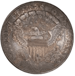
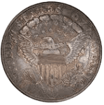

1905 Indian Head Penny - Own a Piece of American History
Transport yourself to the dawn of a new century with the timeless elegance of the 1801 Liberty Coin. Crafted during an era of revolutionary fervor and burgeoning nationhood, this exquisite coin encapsulates the spirit of liberty and independence that defined the early years of the United States. Adorned with the iconic figure of Lady Liberty on the obverse, her graceful profile symbolizes the aspirations of a young nation striving for freedom and democracy. As the embodiment of liberty and enlightenment, Lady Liberty inspires awe and reverence, reminding us of the ideals upon which the nation was founded. On the reverse, intricate designs and symbols depict the young American eagle in flight, symbolizing strength, resilience, and the promise of a bright future. Each detail serves as a testament to the indomitable spirit of a nation forging its destiny amidst the challenges of a changing world. Whether you're a seasoned collector, a history enthusiast, or simply captivated by the allure of vintage treasures, the 1801 Liberty Coin holds undeniable appeal. Display it proudly as a symbol of America's rich heritage and enduring commitment to freedom, or let it serve as a poignant reminder of the sacrifices made by those who came before us.
 
